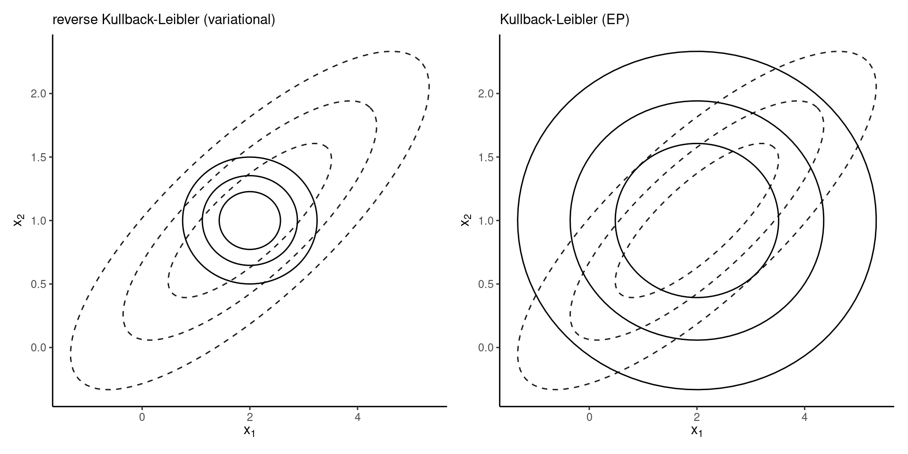

Bayesian modelling
Expectation propagation
Last compiled Tuesday Apr 1, 2025
Revisiting Kullback–Leibler divergence
The Kullback–Leibler divergence between densities \(f_t(\cdot)\) and \(g(\cdot; \boldsymbol{\psi}),\) is \[\begin{align*} \mathsf{KL}(f_t \parallel g) &=\int \log \left(\frac{f_t(\boldsymbol{x})}{g(\boldsymbol{x}; \boldsymbol{\psi})}\right) f_t(\boldsymbol{x}) \mathrm{d} \boldsymbol{x}\\ \\ &= \mathsf{E}_{f_t}\{\log f_t(\boldsymbol{X})\} - \mathsf{E}_{f_t}\{\log g(\boldsymbol{X}; \boldsymbol{\psi})\} \end{align*}\]
Forward Kullback–Leibler divergence
If \(g(\cdot; \boldsymbol{\mu}, \boldsymbol{\Sigma})\) is Gaussian approximating density, then we minimize the KL divergence by matching moments: \[\begin{align*} \boldsymbol{\mu}^* &= \mathsf{E}_{f_t}(\boldsymbol{X})\\ \boldsymbol{\Sigma}^* &= \mathsf{E}_{f_t}\left\{(\boldsymbol{X}-\boldsymbol{\mu})(\boldsymbol{X}-\boldsymbol{\mu})^\top\right\} \end{align*}\] See Exercise 10.1 for a derivation.
Variational inference
We don’t know the posterior mean and variance! (they depend on unknown normalizing constant).
Variational inference finds rather the approximation that minimizes the reverse Kullback–Leibler divergence \(\mathsf{KL}(g \parallel f_t).\)
Qualitatively, this yields a very different approximation.
Comparing approximations
Figure 1: Approximation of a correlated bivariate Gaussian density by independent Gaussians.
Gaussian as exponential family
Write the Gaussian distribution in terms of canonical parameters \[\begin{align*} q(\boldsymbol{\theta}) \propto \exp \left( - \frac{1}{2} \boldsymbol{\theta}^\top \mathbf{Q}\boldsymbol{\theta} + \boldsymbol{\theta}^\top \boldsymbol{r}\right) \end{align*}\] where \(\mathbf{Q}\) is the precision matrix and \(\boldsymbol{r}=\mathbf{Q}\boldsymbol{\mu},\) the linear shift.
Notation
Let \(p(\boldsymbol{\theta} \mid \boldsymbol{y})=\exp\{-\psi(\boldsymbol{\theta})\}\) denote the posterior density.
Since logarithm is a monotonic transform, we can equivalent minimize \(\psi(\boldsymbol{\theta})\) to find the posterior mode.
Denote
- the gradient \(\nabla_{\boldsymbol{\theta}} \psi(\boldsymbol{\theta}) = \partial \psi/\partial \boldsymbol{\theta}\)
- the Hessian matrix \(\mathbf{H}(\boldsymbol{\theta}) = \partial^2 \psi/(\partial \boldsymbol{\theta}\partial \boldsymbol{\theta}^\top).\)
Newton algorithm
Starting from an initial value \(\boldsymbol{\theta}_{(0)},\) we consider at step \(i\), a second order Taylor series expansion of \(\psi(\boldsymbol{\theta})\) around \(\boldsymbol{\theta}_{(i)},\) which gives \[\begin{align*} \psi(\boldsymbol{\theta}) &\approx \psi(\boldsymbol{\theta}_{(i)}) + \nabla_{\boldsymbol{\theta}} \psi(\boldsymbol{\theta}_{(i)})(\boldsymbol{\theta} - \boldsymbol{\theta}_{(i)}) \\& \quad + (\boldsymbol{\theta} - \boldsymbol{\theta}_{(i)})^\top\mathbf{H}(\boldsymbol{\theta}_{(i)})(\boldsymbol{\theta} - \boldsymbol{\theta}_{(i)}) \end{align*}\]
Gaussian smoothing
The term \(\psi(\boldsymbol{\theta}_{(i)})\) is constant, so if we plug-in this inside the exponential, we obtain \[\begin{align*} q_{(i+1)}(\boldsymbol{\theta}) &\propto \exp \left\{ - \frac{1}{2} \boldsymbol{\theta}^\top\mathbf{H}(\boldsymbol{\theta}_{(i)}) \boldsymbol{\theta} + \boldsymbol{\theta}^\top\mathbf{H}(\boldsymbol{\theta}_{(i)})\boldsymbol{\theta}_{(i+1)}\right\} \end{align*}\] where the mean of the approximation is \[\begin{align*} \boldsymbol{\theta}_{(i+1)} = \boldsymbol{\theta}_{(i)} - \mathbf{H}^{-1}(\boldsymbol{\theta}_{(i)}) \nabla_{\boldsymbol{\theta}} \psi(\boldsymbol{\theta}_{(i)}). \end{align*}\]
Side remarks
The new mean vector \(\boldsymbol{\theta}_{(i+1)}\) corresponds to a Newton update, and at the same time we have defined a sequence of Gaussian updating approximations.
This scheme works provided that \(\mathbf{H}(\boldsymbol{\theta}_{(i)})\) is positive definite and invertible. Without convexity, we get a divergent sequence.
The fixed point to which the algorithm converges is the Laplace approximation.
Location-scale transformation gradients
For location-scale family, with a Gaussian approximation on the target \(\boldsymbol{\theta} = \boldsymbol{\mu} + \mathbf{L}\boldsymbol{Z}\) with \(\mathbf{LL}^\top=\boldsymbol{\Sigma}\) and \(\boldsymbol{Z} \sim \mathsf{Gauss}_p(\boldsymbol{0}_p, \mathbf{I}_p)\) that the gradient satisfies \[\begin{align*} \nabla_{\boldsymbol{\mu}}\mathsf{ELBO}(q)&= -\mathsf{E}_{\boldsymbol{Z}}\{\nabla_{\boldsymbol{\theta}}\psi(\boldsymbol{\theta})\} \\ \nabla_{\mathbf{L}}\mathsf{ELBO}(q)&= -\mathsf{E}_{\boldsymbol{Z}}\{\nabla_{\boldsymbol{\theta}}\psi(\boldsymbol{\theta})\boldsymbol{Z}^\top\} + \mathbf{L}^{-\top} \end{align*}\]
Stein’s lemma
Consider \(h: \mathbb{R}^d \to \mathbb{R}\) a differentiable function and integration with respect to \(\boldsymbol{X} \sim \mathsf{Gauss}_d(\boldsymbol{\mu}, \boldsymbol{\Sigma})\) such that the gradient is absolutely integrable, \(\mathsf{E}_{\boldsymbol{X}}\{|\nabla_i h(\boldsymbol{X})|\} < \infty\) for \(i=1, \ldots, d.\) Then (Liu, 1994), \[\begin{align*} \mathsf{E}_{\boldsymbol{X}}\left\{h(\boldsymbol{X})(\boldsymbol{X}-\boldsymbol{\mu})\right\} = \boldsymbol{\Sigma}\mathsf{E}_{\boldsymbol{X}}\left\{\nabla h(\boldsymbol{X})\right\} \end{align*}\]
Alternative expression for the scale
If we apply Stein’s lemma, \[\begin{align*} \nabla_{\mathbf{L}}\mathsf{ELBO}(q)&= -\mathsf{E}_{\boldsymbol{Z}}\left\{ \frac{\partial^2 \psi(\boldsymbol{\theta})}{\partial \boldsymbol{\theta} \partial \boldsymbol{\theta}^\top}\right\}\mathbf{L} + \mathbf{L}^{-\top}. \end{align*}\]
Variational inference
At a critical point, both of these derivatives must be zero, whence \[\begin{align*} \mathsf{E}_{\boldsymbol{Z}}\{\nabla_{\boldsymbol{\theta}}\psi(\boldsymbol{\theta} = \boldsymbol{\mu} + \mathbf{L}\boldsymbol{Z})\} &= \boldsymbol{0}_p. \\ \mathsf{E}_{\boldsymbol{Z}}\left\{ \frac{\partial^2 \psi(\boldsymbol{\theta} = \boldsymbol{\mu} + \mathbf{L}\boldsymbol{Z})}{\partial \boldsymbol{\theta} \partial \boldsymbol{\theta}^\top}\right\} &= \boldsymbol{\Sigma}^{-1}. \end{align*}\]
Variational inference vs Laplace
Compared to the Laplace approximation, the variational Gaussian approximation returns
- a vector \(\boldsymbol{\mu}\) around which the expected value of the gradient is zero
- and similarly \(\boldsymbol{\Sigma}\) which matches the expected value of the Hessian.
The averaging step is what distinguishes the Laplace and variational approximations.
Expectation propagation
Expectation propagation is an approximation algorithm proposed by Minka (2001).
It is more accurate, but generally slower than variational Bayes.
However, the algorithm can be parallelized, which makes it fast.
Decomposition
EP builds on a decomposition of the posterior as a product of terms; with likelihood contributions \(L_i(\boldsymbol{\theta})\) \[\begin{align*} p(\boldsymbol{\theta} \mid \boldsymbol{y}) \propto p(\boldsymbol{\theta}) \prod_{i=1}^n L_i(\boldsymbol{\theta}) = \prod_{i=0}^n L_i(\boldsymbol{\theta}) \end{align*}\] We call \(L_i\) the “factors” or “sites”, and \(L_0(\boldsymbol{\theta})\) is the prior density.
Expectation propagation approximating density
Considers a factor structure approximation in which each \(q_i\) is Gaussian with precision \(\mathbf{Q}_i\) and linear shift \(\boldsymbol{r}_i\), \[\begin{align*} q(\boldsymbol{\theta}) &\propto \prod_{i=1}^n q_i(\boldsymbol{\theta}) \\& \propto \prod_{i=0}^n \exp \left(-\frac{1}{2} \boldsymbol{\theta}^\top\mathbf{Q}_i\boldsymbol{\theta} + \boldsymbol{\theta}^\top\boldsymbol{r}_i\right) \\ &= \exp \left( - \frac{1}{2} \boldsymbol{\theta}^\top \sum_{i=0}^n\mathbf{Q}_i\boldsymbol{\theta} + \boldsymbol{\theta}^\top \sum_{i=0}^n\boldsymbol{r}_i\right). \end{align*}\]
Step 1 of expectation propagation
Form the cavity by removing one factor \(q_j\), so that \[\begin{align*} q_{-j}(\boldsymbol{\theta}) &= \prod_{\substack{i=0 \\ i \neq j}}^n q_i(\boldsymbol{\theta}) =q(\boldsymbol{\theta})/q_j(\boldsymbol{\theta})\\ &\propto \exp \left\{ - \frac{1}{2} \boldsymbol{\theta}^\top \left(\sum_{i=0}^n\mathbf{Q}_i - \mathbf{Q}_j\right)\boldsymbol{\theta} \right.\\&+ \left.\boldsymbol{\theta}^\top \left(\sum_{i=0}^n\boldsymbol{r}_i - \boldsymbol{r}_j\right)\right\}. \end{align*}\]
Step 2 of expectation propagation
Construct an hybrid or tilted distribution \[\begin{align*} h_j(\boldsymbol{\theta}) \propto q_{-j}(\boldsymbol{\theta})L_j(\boldsymbol{\theta}). \end{align*}\] The resulting density is unnormalized.
Global approximation
The overall approximation is Gaussian with precision \(\mathbf{Q} = \sum_{i=0}^n\mathbf{Q}_i\) and linear shift \(\boldsymbol{r}=\sum_{i=0}^n\boldsymbol{r}_i\)
These parameters are obtained by optimizing each hybrid distribution with a Gaussian.
That is, we minimize the \(\mathsf{KL}(h_j \parallel q_j)\) at each step conditional on the other parameters.
Step 3 of expectation propagation
Compute normalizing constant and moments
\[\begin{align*} c_j &= \int h_j(\boldsymbol{\theta}) \mathrm{d} \boldsymbol{\theta} \\ \boldsymbol{\mu}_j &= c_{j}^{-1} \int \boldsymbol{\theta} h_j(\boldsymbol{\theta}) \mathrm{d} \boldsymbol{\theta} \\ \boldsymbol{\Sigma}_j &= c_j^{-1} (\boldsymbol{\theta} - \boldsymbol{\mu}_j)(\boldsymbol{\theta} - \boldsymbol{\mu}_j)^\top h_j(\boldsymbol{\theta}) \mathrm{d} \boldsymbol{\theta} \end{align*}\]
Comment on step 3
The normalizing constant, mean and variance in the above are written in terms of \(p\)-dimensional integrals.
For exponential family of distributions, we can perform dimension reduction.
For example, with generalized linear models, the update for hybrid \(j\) depends only on the summary statistic \(\mathbf{x}_j\boldsymbol{\theta}\), where \(\mathbf{x}\) is the \(j\)th row of the model matrix. Then, the integral is one-dimensional.
Projection of Gaussians
Linear combinations of Gaussian vectors are also Gaussian.
If \(\boldsymbol{\beta} \sim \mathsf{Gauss}_p(\boldsymbol{\mu}, \boldsymbol{\Sigma}),\) then \[\mathbf{x}\boldsymbol{\beta} \sim \mathsf{Gauss}(\mathbf{x}\boldsymbol{\mu}, \mathbf{x}\boldsymbol{\Sigma}\mathbf{x}^\top)\]
Step 4 of expectation propagation
Convert moments \(\boldsymbol{\mu}_j^{*}\) and \(\boldsymbol{\Sigma}^{*}_j\) to canonical parameters \(\mathbf{Q}_j^{*}\) and \(\boldsymbol{r}_j^{*}.\)
Update the global approximation with \[\begin{align*} q(\boldsymbol{\theta}) &\propto \exp \left\{ - \frac{1}{2} \boldsymbol{\theta}^\top \left(\sum_{\substack{i=0 \\ i \neq j}}^n\mathbf{Q}_i + \mathbf{Q}^{*}_j\right)\boldsymbol{\theta} \right.\\& \left. + \boldsymbol{\theta}^\top \left(\sum_{\substack{i=0 \\ i \neq j}}^n\boldsymbol{r}_i + \boldsymbol{r}^{*}_j\right)\right\}. \end{align*}\]
Recap of expectation propagation
The EP algorithm iterates the steps until convergence:
- Initialize the site-specific parameters
- Loop over each observation of the likelihood factorization: 2.1 form the cavity and the hybrid distribution 2.2 compute the moments of the hybrid \(\boldsymbol{\mu}\) and \(\boldsymbol{\Sigma}\) 2.3 transform back to canonical parameters \(\mathbf{Q}\) and \(\boldsymbol{r}\) 2.3 update the global approximation
- Declare convergence when change in parameters is less than tolerance.
The algorithm can be run in parallel.
Improving convergence
There is no guarantee that the fixed-point algorithm will converge…
The algorithm behaves like a smoothed Newton method (Dehaene & Barthelmé, 2018), so we can borrow tricks from numerical optimization to improve convergence.
- linearly interpolate between updates, with weight \(0< w\le 1\) to the current update where at step \(t\).
Some individual factor updates may yield non-positive definite precision for individual terms \(\mathbf{Q}_j\), which is okay as long as the global approximation \(\mathbf{Q}\) remains positive.
Example: EP for logistic regression
Consider a binary response \(Y \in \{-1, 1\}\) with logistic model \[\begin{align*} \Pr(Y=1 \mid \mathbf{x}, \boldsymbol{\beta}) = \left\{1+\exp(-\mathbf{x}\boldsymbol{\beta})\right\}^{-1} = \mathrm{expit}(\mathbf{x}\boldsymbol{\beta}). \end{align*}\] We assume for simplicity that \(p(\boldsymbol{\beta})\propto 1;\) a Gaussian prior could also be used.
References

Comment on factorization
Such factorization is also feasible in graphical models (e.g., autoregressive processes, Markov fields), but needs not be unique.